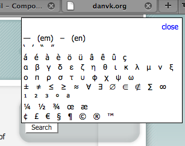

09.12.09
Posted in personal, san francisco at 10:07 am by danvk
On my way in to work Friday morning, I took a detour via the Marin Headlands:
It was a total whiteout on the Golden Gate Bridge, but as soon as I got to the north bay, it cleared right up. I went back into the fog for the ~800 foot climb up Hawk Hill before breaking through and getting some amazing views from the top:

I saw a fighter plane zoom into the city, which made me briefly think that it was Fleet Week. Not so! (It’s in October.)
The ride down the back side was misty, beautiful and frighteningly slick. All in all, I left at 7:40 and got into work with a change of clothes right around 10.
One more view from the top:
Permalink
09.07.09
Posted in web at 3:20 pm by danvk
The other day, I noticed that one of my friends had Wikipedia’s article on the em dash bookmarked in her toolbar. While that article is a gem of punctuation literature, it turned out that she would go to it, select an em dash, and copy/paste it into emails.
A better way to do this is with a bookmarklet. Drag this to your browser’s bookmark toolbar:
character palette
Click the bookmarklet on any page. You’ll see a character palette like this:

Select the character you like and either copy/paste it or drag it where you like. Then click “Close” to make the palette go away until you need it again. Enjoy!
Note: I’ve tested this in Firefox, Safari and Chrome. This probably doesn’t work in IE.
Permalink
{kind=link}